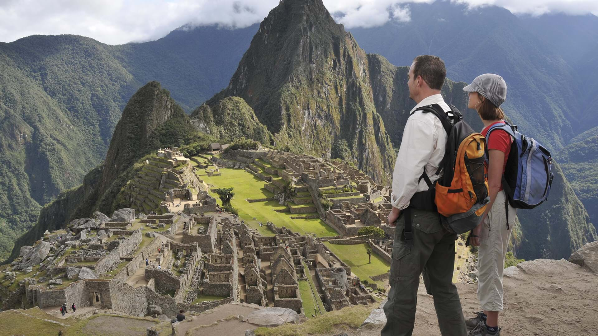

MACHU PICCHU
HistoriaEn esta sección, te invitamos a explorar las raíces de una de las maravillas del mundo. Aquí encontrarás: La Historia: Desde su construcción en el siglo XV por el emperador Pachacútec hasta su redescubrimiento en 1911 por Hiram Bingham. Fechas Festivas Importantes: Conoce las celebraciones tradicionales, como el Inti Raymi, que mantienen viva la cultura inca. Leyendas Comunes: Descubre los mitos que rodean este lugar, como la conexión espiritual de los Incas con la montaña y sus misteriosos templos. |

|
|---|
Tour y ActividadesEn esta sección, te ofrecemos una guía completa para aprovechar al máximo tu visita. Aquí encontrarás: Zonas Turísticas: Descubre los principales atractivos, desde la Puerta del Sol hasta el Templo del Cóndor. Tours y Actividades: Explora los mejores recorridos, caminatas y experiencias guiadas que te conectarán con la historia inca. Recomendaciones: Restaurantes y alojamientos recomendados para una estancia inolvidable. |
 |
|---|
Consejos PrácticosEn esta sección, te ayudamos a planificar tu viaje de manera inteligente. Aquí encontrarás: Guía por Temporadas: Información sobre el clima en cada época del año. Accesorios y Ropa Recomendados: Consejos sobre qué llevar para una visita cómoda y segura. Clima Esperado: Datos sobre las condiciones meteorológicas para prepararte mejor. Advertencias y Precauciones: Consejos para cuidar tu salud y seguridad durante el recorrido. |

|
|---|